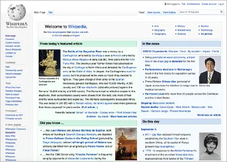

Appendix II
Concepts for a Demo Archive
This second appendix covers the archiving and documentation of software-based new media art, like demos. The proposed solutions focus on demos but are equally applicable to other online archives of other types of digital media art.
A2.1 The Necessity of Conserving New Media Art in General
When we think of physical art conservation, we imagine conservators meticulously touching up and refurbishing the brushstrokes of a painting or painstakingly cleaning out decades and centuries of pollution from a sculpture's pores and cracks. We know why this arduous and time-consuming work is necessary. We understand that physical artworks are more than just relics of the past; they are our cultural heritage that shows us the origins of civilization's currents and flows, what cultures believed in, where they might have made mistakes, and which ideas sprung forth from them. We understand that physical art needs to be examined, preserved, researched, and documented so that we not only see it through the eyes of the present but can grasp what it represents in its original context.
As difficult as it is to conserve physical artifacts, they have been brought into existence, and even though they succumb to decay and corrosion, they are observable and can be beheld without any further doing by following generations. This is not true of most new media art, particularly of software-based art such as demos.
Software-based art needs to be made to run so that it can be beheld. It was created on the technology of the past. Some software can only run on obsolete technology and needs to be adapted to more current technology. The technology used for other software is undocumented and forgotten, making it very difficult or even impossible to run the art anymore.
As software-based art, demos are potential victims of the same risks of being lost. They were programmed to run as close to the actual hardware as possible, often written in assembly language that is specific to a processor architecture. They mostly take advantage of a computer's undocumented capabilities and features. In some cases, these features were specific to a specific model of machine. Without documentation, demos can be lost in the sands of time. It is not enough to simply salvage a demo's files and then launch them whenever needed. Information about the exact system configuration is necessary to make them run at all and as authentically as possible.
Figure 97: Media Arts Histories and Museum and Archive on the Move by Univ.-Prof. Dr. Oliver Grau
A2.2 The Quest for the Preservation of Digital Art
The Department for Image Science at Danube University Krems has researched the challenges facing digital art preservation and has fought for best practices in its conservation. For more than two decades, the Archive of Digital Art (ADA) has pioneered the collection and documentation of digital artwork at http://digitalartarchive.at
ADA is managed and operated at the Danube University Krems under the leadership of Univ.-Prof. Dr. Oliver Grau, based on the fundamentals first established in his publication "Virtual Art: From Illusion to Immersion" nearly twenty years ago and further cemented in Museum and Archive on the Move: Changing Cultural Institutions in the Digital Era.
In its mission statement, the Archive of Digital Art describes its work below:
"As a pioneer in the field of Media Arts research, the "Archive of Digital Art" (ADA) has documented the rapidly evolving field of digital art since 1999. This research-oriented overview of works at the intersection of art, science, and technology has been developed in cooperation with international media artists, researchers and institutions as a collective project."[99]
Figure 98: ADA, the Archive of Digital Art at https://www.digitalartarchive.at
Furthermore, the mission statement delimits the objectives of the conservation of the digital as opposed to the physical:
"Since today's digital artworks are processual, ephemeral, interactive, multimedia-based, and fundamentally context dependent because of their different structure, they require a modified, or 'expanded concept of documentation.' We ascribe high importance to artistic inventions like innovative interfaces, displays or software."
The Archive of Digital Art (ADA) will serve, together with its sister project the Interactive Archive and Meta-Thesaurus for Media Art Research (AT.MAR), as a flagship endeavor, a pioneering beacon to aspire to in the conception of an archive of demo art.
A2.3 Objectives of a Demo Archive
Based on the exemplary work of Dr. Grau and his team at ADA, this section explores the options in archiving art, specifically from the demoscene.
Oliver Grau describes the archive's changing purpose in Museum and Archive on the Move: Changing Cultural Institutions in the Digital Era:
"The archive, historically the physical place where historical records are accumulated, preserved and often interpreted, faces a drastic transformation as well." And furthermore, "The future archive will connect the object or document with other archives, artefacts, information, people, and events. The archive will progressively absorb duties and features from other institutions and cultural entities, such as databases, installations, games, networks, knowledge tools, etc."
In MediaArtHistories, Grau describes the objective of any digital art archive:
"Over the last thirty years media art has evolved into a vital factor of the contemporary artistic scene. Digital art has become the art of our times, yet it has not 'arrived' in the cultural institutions of our societies. It is still rarely collected, it is not included or supported under the auspices of art history or other academic disciplines, and it is almost inaccessible for the non-north-Western public and their scholars. To change this is our goal!"
Therefore, the main purpose of the concrete archival efforts in the demoscene can be distilled down to the following objectives:
A2.3.1. Description of the Demo Artifact
The scholarly description should provide details of the demo artifact itself. This includes descriptions of the depicted imagery, music and text content, the system it was designed for, and the historical context of its release (e.g., at a demo party, in a public domain library, in a BBS, or as part of a diskzine, etc.). Ideally, the context and process of its creation should be provided.
Furthermore, the description should include which limitations the demo exceeded in the hardware it was created on or that were imposed at the outset of its creation (e.g., arbitrary RAM limits, time limits during a demo party, etc.). Where available, the description should include information on the technologies used, including the hardware, graphics software, music composition applications, programming language, etc.
Just as applicable to the scholarly analysis of demo art, Oliver Grau argues for an overarching strategy in the art-historic critique and analysis of all media art:
"Visual born digital objects often remain on the margin of research even though they mark a vast amount of online data. Additionally, they are still not incorporated into the art historical canon or exist only as a niche phenomenon rather than a main contemporary art movement."[100]
A2.3.2. Interlinking of Artifacts with Their related Artists, Events, and Assets
The demo archive cannot be the be-all, end-all of an artifact's information. It must show the relationships between the described pieces and their creators and events, such as exhibitions or demo parties. This information does not have to be in the actual demo archive but can reference other archives or sources outside of the demo archive. In most cases, the demo's actual assets, such as the source code, will be in a code repository like GitHub or Gitlab. Assets, artists, and events should be linked to the artifacts and put into the right context to understand their relationships.
A2.3.3. Digital Assets of the Demo
Since demos are software-based new media art, they can be reduced to two sets of assets:
- The source code, graphical assets (sprites and image tiles), and music files (chip music compositions, music modules, and sound samples).
- The executable file that run on the original hardware. These are the compiled/assembled programs.
Ideally, the digital assets would provide direct links to a code repository of the source code, such as on GitHub or GitLab, as well as links to the packaged executables, either on disk images or as program files.
The assets can also include descriptive files, like screenshots of the demo running on original hardware and full video recordings of the demo, such as on YouTube).
A2.3.4 Documentation and Instructions for Conservation Purposes
Finally, a good demo archive should include documentation on the preservation and conservation of the demo art. This can include instructions on:
- How to run the demo on historic hardware and which configurations it will run on.
- How to run the demo on historic hardware that has been updated with contemporary hardware, e.g., with a USB replacement for the disk drive and with a scan doubler for output on LCDs.
- How to run the demo using an emulator on a modern PC (including the exact configuration and ROMs) or on an FPGA implementation of the retro hardware.
- If possible, instructions on how to recreate the demos using contemporary technologies, like HTML5, JavaScript, and CSS.
Furthermore, the documentation can include the ideal way of running and experiencing the demo, e.g., on a CRT display as opposed to a more modern LCD. If there are no assets preserved, then instructions on how to preserve the demo files (i.e., pull them from the physical media like floppy disks and store them in an archival format) can be provided.
A2.4 Achieving Critical Mass Through a Collaborative Effort
There have been thousands, perhaps even tens of thousands, of demos created over the decades. Therefore, it would take a great effort to describe, document, and preserve all of them. No single organization will be able to cover all the demos ever created, and no single organization has to. There is a passionate and vocal community around the demoscene, and many of the original creators are still alive and active. The best way to approach a comprehensive effort to archive and document demos is to tap into the community's dedication and passion and provide a platform for a focused collaborative effort. Authorship of individual articles on demo artifacts, demo parties, and the demo creators should be shared.
One editor might create the skeleton of an article, perhaps only including the demo's name and the system it ran on. Another user can then elaborate on that and add a more detailed description. Yet another user can add screenshots or other assets to the article. If one user makes a mistake or adds erroneous information, other users can and will make the necessary corrections. Over time, an established archive has the potential to cover ever larger parts of the demoscene.
In Digital Art through the Looking Glass: New strategies for archiving, collecting and preserving in Digital Humanities, Grau particularly emphasizes the collaborative and transdisciplinary aspects so vital to an archive of digital art:
"Digital art preservation necessitates a network of collaborations: between the artists and technicians that developed and constructed the work, the institutional staff responsible for collection and preservation, scholars and conservationists."[101]
A2.5 A New Demo Archive?
Why would it be necessary to create a new archive of demos? There are the two major cross-platform demo archives, pouet.net and demozoo.org, that store demo files and some information about the release, such as the name of the demo group and the release date. In particular, pouet.net is extremely comprehensive.
Unfortunately, neither of these two archives actually document the demos. They do not describe the demo's content, do not analyze, and, most of all, do not document the techniques used to create the demo and describe the necessary original hardware to run it authentically, and the method to run it in emulation.
Demoscene enthusiasts might find it obvious at present and do not need any further documentation, but this is not sustainable in the future. Even enthusiasts have trouble finding the right combination of factors. Providing the right documentation can ensure that decades-old demo art can still be experienced.
Furthermore, a potential new archive can include art historians and technical archeologists' perspectives on the pieces. They can include interpretations, examinations, and in-depth research.
Pouet.net and demozoo.org are excellent repositories for demo art, but they are not enough. An archive is needed not only for the files and some meta information, but also for research and documentation on the demo materials' conservation.
What would a "future-proof" demo archive look like?
A2.6 Technical Solutions for Implementing a Demo Archive
In this section, technical solutions will be presented to map out the requirements for an archive of demo art and media, a digital archive dedicated to the preservation and documentation of demo art. It should be conceived as a free digital art database that showcases, analyzes, and preserves demo art from the 1980s to the present day, serving as a rich trove of historical and contemporary demo art that is open for all to share, interact with, and explore.
As previously established, it is not enough to simply salvage and archive demo files. The archive's technical infrastructure must provide for this in any case. Yet, a truly sustainable archive provides space to present demo research, analysis, and interpretation, and the information on configuring the obsolete hardware or emulators that are needed to run them. Details on the hardware and software setup are vital to run a demo as authentically as possible.
Above all, this archive should be designed to be open and accessible for anyone in the community to join. Like Wikipedia, the archive should allow users to edit articles as well as create them. By focusing on collaboration in the passionate and vocal demoscene subculture, the archive can tap into the vast reservoirs of knowledge that this community holds. An open model of collaboration allows for swifter documentation and analysis.
A2.6.1 Features of a Potential Archive of Demo Art
The most central feature of an archive should be the ability to search for demo artwork. Once users have found what they are looking for, they can select the piece they are interested in and learn more on a dedicated page for each item that details information through descriptions, characteristic tables, images, and videos. The archive should provide cross references to information about the artist and the history of the demo's creation, with information about exhibitions where the digital art was displayed or the demo party where it was created. The archive should provide the executable files, source code, and disk images needed to run the demo if available.
The objective should be to create a sophisticated database that represents a centralized source and repository of demo art.
A2.6.2 Options for an Open and Collaborative Archive of Demo Art
There are several different technical approaches to establishing an online archive. The most important factor is the collaborative aspect; users should be able to register as editors and input information about demos and other related topics. This collaborative process can either go through a review before publication or be published immediately to undergo scrutiny by users, who will then edit and polish the article.
This section discusses possible technical implementations. There are three major directions that can be taken:
- Open-Source Solutions: Either through the use of already-established web software currently in operation, e.g., Wikipedia, or by using the underlying technology, the Wiki, a collaborative environment on the web, specifically the open-source project called MediaWiki.
- Proprietary Solution: General archiving solutions are nearly as old as the computer industry, so there are a number of commercially available, proprietary products for art archives. This section will briefly discuss Artwork Archive as an example.
- Custom Implementation: Considering how advanced current web technologies are and how easy it is to use their available components; it is perfectly feasible to build an archive as a bespoke implementation to cover all the required features. The final part of this section describes a case study for implementing a tailor-made online demo archive solution using Angular, NodeJS, and Heroku.
A2.6.3 Approach I: Open-Source Solutions
A Wiki is quite familiar to a general audience as Wikipedia, its most well-established implementation. This type of hypertext publication is edited and managed collaboratively by a community of registered users.
Why not simply use Wikipedia to archive demo art or any kind of digital art? The online encyclopedia is well-established and well-known. It is a knowledge source referenced by millions of users across the globe. There are hundreds of thousands of users already contributing or helping others contribute, writing new articles, and correcting existing articles on Wikipedia.
Using Wikipedia is the easiest solution. It is as simple as creating the necessary users who can then start adding in-depth descriptions of the demos.
Before moving forward with this solution, two issues need to be considered.
A2.6.3.1 Wikipedia's Notability Policy and Other Guidelines
Wikipedia targets a wide audience; therefore, it has a notability policy stating:
"On Wikipedia, notability is a test used by editors to decide whether a given topic warrants its own article."[102]
The highly specialized nature of individual pieces of demo art (and other digital art) might contradict this notability policy because separately describing each individual piece might be too obscure to be notable. Of course, it would have to be tested to see if this would really happen. But in any case, using Wikipedia as a platform as a digital art archive requires accepting this entity's policies.
In the long run, this can be counterproductive to submit to someone else's rules because the policies can change and conflict with the archival efforts.
A2.6.3.2 Institutional Credit and Delivery on Funded Project Objectives
Writing and correcting the large number of demo art articles required to cover the whole field is a daunting task. Solely relying on volunteers and enthusiasts will yield very heterogeneous results. An archive requires a degree of standardization in its articles, a clear overall taxonomy, and a normalization of its data sets.
This can only be achieved by a concerted effort between academics and experts working on the archive for years, which would require funding. Any grants for funds define objectives and metrics that need to be met so that a project can be deemed a success. With its "free for all to edit" approach, Wikipedia makes it difficult, or even impossible, to enforce standardization according to outside principles. Therefore, a more institutionalized and curated approach is necessary while still employing the strengths of the Wiki principle but under the archive's management control.
A2.6.3.3 MediaWiki
A curated and institutionalized archive can be operated with open-source software. MediaWiki is probably the most widely adopted open-source implementation, and is available free of charge at https://www.mediawiki.org. It is PHP-based and requires an SQL or Oracle database for data storage. It can be installed on a suitable cloud storage or webspace.
MediaWiki is an elaborate content management system (CMS) with a focus on articles. Users can quickly access well-structured and networked article collections. Its key functionality is the ability to supplement and improve articles just as easily as reading them. MediaWiki enables users to edit content themselves and communicate with one another, and it logs all changes made to articles such that users can compare and contrast previous texts and even restore old versions if necessary.

Figure 99: Wikipedia.org as the most prominent implementation of a Wiki
Using a MediaWiki provides visitors and editors alike with the same user interface as Wikipedia while maintaining the control necessary for a concerted archival effort.
A2.6.3.4 The Advantages of MediaWiki
- It is open source and free to use.
- It has a well-established user interface due to the adoption by Wikipedia.
- MediaWiki provides a full text search of all content.
- User accounts and rights can be assigned individually or in groups.
- MediaWiki has a large range of functionalities out of the box.
- It provides access to previous versions of articles.
- It complies with governmental requirements for web accessibility.
- The theme and layout can be easily adapted.
A2.6.3.5 The Disadvantages of MediaWiki
- The collaborative and open editing process requires administrator attention and oversight to prevent vandalism and maintain consistency in the content's presentation.
- The adaptation of the user interface and theme is not as flexible as a custom solution.
- The administration of critical access rights, such as those of full administrator accounts, require intervention in the database.
A2.6.3.6 Examples of MediaWiki Sites
- Wikipedia (http://wikipedia.org/) - The online encyclopedia based on MediaWiki.
- Wookieepedia: The Star Wars Wiki (https://starwars.fandom.com/wiki/Main_Page) - The online encyclopedia on the universe in the Star Wars films, comics, TV shows, novels, and toys.
- VoWi Wiki (http://vowi.fsinf.at/wiki/ ) - A MediaWiki for students at the University of Vienna that collects course descriptions, transcripts, and old exam information.
- MediaWiki sites (https://www.mediawiki.org/wiki/Sites_using_MediaWiki/en) - A list of Wiki projects that use MediaWiki.
MediaWiki is an off-the-shelf product that can be used for digital archiving and is retrofitted for that purpose. But what would software look like that was conceived from the ground up to meet the requirements of the documentation and archiving of digital art?
A2.6.4 Approach II: A Proprietary Commercial Solution
There are ready-to-install, commercially available solutions that are advantageous in that they are ready to use without needing to be installed or configured on a server.
One of these proprietary solutions is called Artwork Archive. It is a cloud-based database specifically for the archiving of art. It offers a subscription-based pricing model and is a managed product that runs in a web browser with all the data stored on the company servers.

Figure 100: Artwork Archive on a mobile browser and a desktop market. (Source: https://www.artworkarchive.com)
On its website https://www.artworkarchive.com, the following description is seen: "Artwork Archive provides artists, collectors and organizations powerful tools to manage their artwork, career or collection." It helps track inventory, contacts, galleries, and sales of artwork. It is more suited to living collections or the works of living artists that are sold and change ownership.
Artwork Archive's main feature is the cataloging process. Each piece of artwork is cataloged with a description, keywords, images, and records on locations, exhibitions, and other details. Art collections can be managed in the inventory system.
A2.6.4.1 The Advantages of Commercial Proprietary Solution
- It is ready to use without needing to be installed.
- It is already adapted to the specific archival requirements of artwork, offering a large range of functionalities out of the box.
- It provides a full text search of all content.
- User accounts and rights can be assigned individually or in groups.
A2.6.4.2 The Disadvantages of a Commercial Proprietary Solution
- It is expensive and offers a subscription-based pricing model.
- Using proprietary solutions leads to "Vendor-Lock-In," which means the archive's data is stored in a commercial vendor's format and storage with the interest of prolonging the business relationship.
- Users have little influence on the development roadmap.
A2.6.5 Approach III: Developing a Custom Demo Archive
This section describes a practical case study called ADAM, or the Archive of Demo Art & Media. This project was developed by this thesis' writer in July and August of 2020 as an exercise in the use of web technologies and a prototype for an archive of new media art.
Figure 101: ADAM, the Archive of Demo Art & Media (all documentation at https://mbalabanov.github.io/adam/)
At https://demoarchive.art, users can search for digital demo artwork. On the detail pages, they will find a description of the respective demo artifacts, as well as photos, screenshots, and links to videos. Also, if available, they will find ZIP files or disk images with the artifacts' original files. There is also room for information about the artists, at which events their works were exhibited, and at which demo parties their works were created. The objective here was to program a custom digital archive solution using modern technologies, a noSQL database, strict separation between user interface, API (application programming interface), and the database; l hosted on a managed and secure cloud platform.
ADAM is a practical implementation, but it also lays the conceptual groundwork for the user interface of a demo archive. It was inspired by the Archive of Digital Art (ADA) at Danube University Krems. ADAM only contains placeholder content at the time of this writing, showcasing its user interface, the powerful search and filter features, and its user management.
While ADA's technical foundations are "a PostgreSQL Open Source Database, written in C++ programming language, with a Linux kernel operating system, and a TYPO3 content management system,"[103] the ADAM project serves as a practice application of contemporary web technologies, such as JavaScript using NodeJS and the Angular framework, MongoDB as a database, and hosting on the Heroku cloud service.
The full project documentation in German, including the source code (HTML, CSS, and JavaScript using NodeJS and Angular) under a Creative Commons license, can be found here: https://mbalabanov.github.io/adam/
ADAM consists of three parts:
- The API server on https://adam-interface.herokuapp.com with interfaces to call up the data.
- The website (web app) with a public area on https://demoarchive.art where visitors can find information about the demo art
- An editorial area, also on https://demoarchive.art, in which editors can enter and edit new content and administrators can manage rights.
Figure 102: The architecture of ADAM
This three-tiered structure might look fragmented with too many component parts, but it in fact has many advantages. By separating the different functions, ADAM can offer not only the web-frontend for users visiting with a web browser, but at a later time, also offer a mobile app. This is made possible by the separate application programming interface (API). The API also allows for ADAM to connect with other art archives and provides its data for a federated search.
And the final advantage is that when a new and better technology becomes available, any part of ADAM can be replaced individually without interfering with the operations of the others.
A2.6.5.1 Components and Installation
The project consists of the following repositories:
- ADAM API Server http://github.com/mbalabanov/adam (runs on Heroku at adam-interface.herokuapp.com)
- ADAM Web Frontend http://github.com/mbalabanov/adam-api (runs on Heroku on adam-frontend.herokuapp.com with CNAME entry on http://app.demoarchive.art )
A2.6.5.2 Local Installation
The ADAM API Server (repository at http://github.com/mbalabanov/adam-api ) runs on NodeJS/Express. Once the repository has been cloned, the dependencies can be installed by entering:
cd adam-api
npm install
The API server can be started locally on port 5003 by entering:
npm start
The ADAM Web Frontend at http://github.com/mbalabanov/adam is an Angular Universal SSR app (server-side rendering). Once cloned, the dependencies are installed by entering the following commands:
cd adam
npm install
The web frontend can be launched locally on port 4200 by entering:
ng serve
Please note: If you want to use the locally running API server for the web frontend, you will find the URL of the API in the file src/app/apirequestservice.service.ts. Simply change this to http://localhost:5003, then everything will only run locally. You can run the frontend on http://localhost:4200 and refer all data from the API to http://localhost:5003
A2.6.5.3 ADAM's Web Frontend
When users visit https://demoarchive.art, they are presented with ADAM's public web frontend. Here, they can learn about the project, search for artifacts (demos), persons (demo creators), and events (demo parties, exhibitions).
The web app has the following sitemap:
Figure 103: The sitemap of ADAM, the Archive of Demo Art & Media
The main views are home, search results, and item details:
Figure 104: The views of home and the search results
The item details are the archive's centerpiece. They show detailed information of an artifact, person, and event with characteristics, descriptions, images, tags/keywords, and links to related materials, such as other entries in the archive and external resources like videos, websites, and assets.
Figure 105: The view of the item details
A2.6.5.4 Editor's Area
Users can register as editors and log in to make changes to the archive. On the 'edit items' page, they can create new archive items and edit the featured items in the carousel on the front page, as well as edit news articles and compliance pages.

Figure 106: The editor's area of ADAM
Additionally, the public view of ADAM provides information pages on news and the pages required for legal compliance: including contact, privacy policy (for EU GDPR and Austrian DSGVO compliance), cookie policy (for EU GDPR and Austrian DSGVO compliance), imprint and legal Information (for compliance with Austrian and German site owner disclosure laws), and terms of use.
Figure 107: The views of new articles, contact, and compliance pages
Please note that all images in this project are only placeholders from http://adobestock.com. Although they are part of the project's code repository, they are not released for general use.
A2.6.5.5 Functional Diagram of the ADAM Web Frontend
+-+-+-+-+ +-+-+-+-+-+-+-+-+ +-+-+-+-+-+-+-+-+-+
|A|D|A|M| |F|R|O|N|T|E|N|D| |S|T|R|U|C|T|U|R|E|
+-+-+-+-+ +-+-+-+-+-+-+-+-+ +-+-+-+-+-+-+-+-+-+
PAGE STRUCTURE
Home 1. navbar.component with search and login (uses auth.service for
Page login, sends search queries to search page).
2. carousel.component showing featured items (uses
apirequests.service to GET featured items).
3. Static information on purpose of archive.
4. archivecategories.component with search and links to the three
categories (uses apirequests.service to GET category infos).
5. Static information on how to contribute.
6. newslist.component showing current news stories (uses
apirequests.service to GET news items).
7. footer.component.
8. cookiewarning.component.
PAGE STRUCTURE
Archive 1. navbar.component with search Search
Page and login (uses auth.service Results
for login, sends search queries Page
to search page).
2. archivecategories.component
(uses apirequests.service to PAGE STRUCTURE
GET category infos) 1. navbar.component with
3. footer.component. search and login (uses
4. cookiewarning.component. auth.service for login,
sends search queries to
PAGE STRUCTURE search page).
Category 1. navbar.component with search 2. searchall.component with
List and login (uses auth.service for a searchfilter and
page login, sends search queries to pagination for the results
search page). (uses apirequests.component
2. categorylist.component (uses to GET category items).
apirequests.service to GET this 3. footer.component.
category's infos). 4. cookiewarning.component.
3. footer.component.
4. cookiewarning.component.
PAGE STRUCTURE
Item 1. navbar.component with search and login
Details (uses auth.service for login, sends
Page search queries to search page).
2. itemdetails.component (uses
apirequests.service to GET item details
and auth.service to allow
editing/deleting the item).
3. footer.component.
4. cookiewarning.component.
PAGE STRUCTURE PAGE STRUCTURE
Edit 1. navbar.component with search and User 1. navbar.component with search
Items login (uses auth.service for login, Profile and login (uses auth.service
Page sends search queries to search page). Page for login, sends search queries
2. createarchiveitem.component (uses to search page).
apirequests.service to PUT new 2. authprofile.component (uses
items). auth.service for user profile
3. editcarouselfeatures.component data).
(uses apirequests.service to GET and 3. footer.component.
PUT featured items). 4. cookiewarning.component.
4. editnewspages.component (uses
apirequests.service to GET and PUT
news).
5. editcompliancepages.component
(uses apirequests.service to GET and
PUT compliance pages).
6. footer.component.
7. cookiewarning.component.
PAGE STRUCTURE PAGE STRUCTURE
News List 1. navbar.component with search Compliance 1. navbar.component with search and
Page and login (uses auth.service Page login (uses auth.service for login,
for login, sends search queries sends search queries to search page).
to search page). 2. compliancearticle.component to
2. newslist.component (uses show the text of the current
apirequests.service to GET news compliance page based on URL slug
items). (uses apirequests.service to GET the
3. footer.component. compliance text).
3. footer.component.
4. cookiewarning.component.
PAGE STRUCTURE PAGE STRUCTURE
News 1. navbar.component with search Contact 1. navbar.component with search
Article and login (uses auth.service Page and login (uses auth.service
Page for login, sends search queries for login, sends search queries
to search page). to search page).
2. newsarticle.component to 2. Static information with
show the text of the current infos and contact form.
news item based on URL slug 3. footer.component.
(uses apirequests.service to 4. cookiewarning.component.
GET the news item).
3. footer.component.
4. cookiewarning.component.
Figure 108: Functional diagram of the ADAM web frontend
A2.6.5.6 ADAM Backend: API and DB
The database in MongoDB is organized into the following collections: Artifacts, Persons, Events, Featured, News, and Compliance.
Figure 109: The data model of ADAM
A2.6.5.7 API Documentation
Adam-interface.herokuapp.com acts as the API of ADAM, the Archive of Demo Art & Media. It serves as the interface to access and change the data on MongoDB. Artifacts, persons (artists, curators), events, news, the featured items, and the compliance text can all be accessed through HTTP requests in a RESTful manner.
GET (root):
Example: GET https://adam-interface.herokuapp.com/"
/ - Provides the API documentation and instructions
GET all:
Example: GET https://adam-interface.herokuapp.com/all
/all - The complete set of archive data (does not include news, compliance text, and featured items)
GET (WITHOUT an ID):
Example: GET https://adam-interface.herokuapp.com/artifacts
/artifacts - All artifacts
/persons - All persons
/events - All events
/news - All news items
/compliance - All compliance pages
/featured - The four items to be featured on the frontpage
GET (WITH an ID):
Example: GET https://adam-interface.herokuapp.com/artifacts/a1
/artifacts/id - A specific item from the artifacts list
/persons/id - A specific item from the persons list
/events/id - A specific item from the events list
/news/id - A specific news item from the news list
/featured/id - A specific item of the four featured on the frontpage
/compliance/id - A specific compliance page
DELETE (WITH an ID):
Example: DELETE https://adam-interface.herokuapp.com/artifacts/a1
/artifacts/id - Delete a specific item from the artifacts list
/persons/id - Delete a specific item from the persons list
/events/id - Delete a specific item from the events list
PUT (WITH an ID):
Example: PUT https://adam-interface.herokuapp.com/persons/p0
/artifacts/id - Edit a specific item from the artifacts list
/persons/id - Edit a specific item from the persons list
/events/id - Edit a specific item from the events list
Structure of artifacts, persons, and events
_id (String)
ref_id (String)
category (String)
name (String)
aliases (Array)
shortdescription (String)
longdescription (String)
dates (Array): label (String), date (String)
tags (Array)
images (Array): url (String), name (String), description
videos (Array): url (String), name (String), description
websiteURLs (Array): url (String), name (String)
assets (Array): url (String), name (String)
artifacts (Array)
persons (Array)
events (Array)
/news - The contents of all news items must be changed at once.
There are three news items, each with the structure below.
Structure of news items:
id (String)
ref_id (String)
title (String)
image (String)
largeimage (String)
shortdescription (String)
articletext (String)
/featured/id - The contents of all featured items must be changed at once.
There are four featured items, each with the structure below.
Structure of featured items:
ref_id (String)
image (String)
title (String)
description (String)
link (String)
/compliance/id - The contents of all compliance pages must be changed at once.
There are five compliance pages, each with the structure below.
Structure of compliance items:
category (String)
title (String)
firstimage (String)
secondimage (String)
articletext (String)
POST (WITH the parameter 'new')
Example: POST adam-interface.herokuapp.com/collections/new
/artifacts/new - Create a new item in the list of artifacts
/persons/new - Create a new item in the list of persons
/events/new - Create a new item in the list of events
A2.6.5.7 Creating New Archive Entries and Editing Existing Ones
Users can create any of the three types of archive items:
- Artifacts: These are items of new media art or specifically demo art. They can be the artwork produced by artists, the results of development, the concepts for unfinished art or art they never started work on. Artifacts can be described in words and pictures, with videos and links to their code in a repository. They can also have aliases and keywords.
- Persons: These are the people behind the art. They can be the artists, the curators, the conservators and art historians. They are individuals with aliases, active years, specializations, a personal history and related works.
- Events: Anything restricted in time can be an event, such as an exhibition, a demo-party, the release of a piece of art, a competition or award ceremony.
A2.6.6 Conclusion of the Case Study
This case study of ADAM, the Archive of Demo Art & Media, shows how much is possible by using web technologies that were developed by large communities. ADAM is built on these established web technologies, hosted on a managed cloud platform, and leverages MongoDB for its data. ADAM ensures a strict separation between the user interface, the API, and the data.
This is not a revolutionary solution, but rather a proven, modern approach that matches the requirements and needs of an archive of digital art. It is expandable and "future-proof." Over the next few years, whenever a certain web technology becomes inevitably deprecated or a far better option arises, that component can be swapped out or migrated to a new technology. When Angular has served its time as the frontend framework used for ADAM, a new framework with the next generation of features can be implemented without interfering with the API and database. If the API's cloud service is no longer a viable option, the existing NodeJS code can be easily moved to a different cloud service. Should MongoDB's great performance and advanced features due to the document-based data model be eclipsed by an even more advanced database solution, then the data can be migrated to this database without requiring changes to the web frontend and with only minor adaptations to the API.
By approaching the custom archive solution as component-based building blocks, the archive remains flexible and open to future developments.
A2.7 The Right Solution for the Right Archive
In the discussion above, it has been established that using Wikipedia is too broad of a solution that has the risk of submitting to another party's rules and policies. Likewise, a proprietary solution will prove to be expensive, inflexible, and carries the risk of vendor lock-in.
The two most viable options to set up an archive of demo art are:
- The use of a MediaWiki: Of the two options, this is the fastest, cheapest, and easiest option while maintaining some level of control. Future development is handled by the MediaWiki community, including security patches and the adoption of next-generation technologies. The major risk is that the product was developed to meet a very wide range of needs, most not applicable to an art archive's specific requirements. This does not necessarily have to be a disadvantage, but it does risk having to wait for the MediaWiki community to develop a future feature specific to the art archive.
- The custom development of the Archive of Demo Art & Media: If the necessary financing is secured, then it is relatively reasonable and affordable to develop an archive solution based on community-created web technologies. This offsets the need to develop everything from scratch while still allowing targeting of the exact requirements. This bespoke approach is more expensive, but the results are exactly what is needed for an art archive.
Regardless of the approach taken, an archive should be open and accessible to a large audience and potential contributors. It should allow for federated data sources in other archives. Only by being open can a demo archive be a gift for today's demoscene. Not only that, it can also be a gift for tomorrow's media art historians, artists, and technologists seeking to learn how yesterday's artists were able to create demo art despite the constraints and limitations of the technology used.